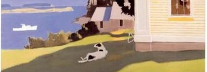

<div><div><div></div><div></div><div><br><br><div><a href="https://s.turbifycdn.com/aah/paulgraham/the-island-test-11.gif"></a><br><br><br><br>July 2006<br><br>I've discovered a handy test for figuring out what you're addicted
to.  Imagine you were going to spend the weekend at a friend's house
on a little island off the coast of Maine.  There are no shops on
the island and you won't be able to leave while you're there.  Also,
you've never been to this house before, so you can't assume it will
have more than any house might.<br><br>What, besides clothes and toiletries, do you make a point of packing?
That's what you're addicted to.  For example, if you find yourself
packing a bottle of vodka (just in case), you may want to stop and
think about that.<br><br>For me the list is four things: books, earplugs, a notebook, and a
pen.<br><br>There are other things I might bring if I thought of it, like music,
or tea, but I can live without them.  I'm not so addicted to caffeine
that I wouldn't risk the house not having any tea, just for a
weekend.<br><br>Quiet is another matter.  I realize it seems a bit eccentric to
take earplugs on a trip to an island off the coast of Maine.  If
anywhere should be quiet, that should.  But what if the person in
the next room snored?  What if there was a kid playing basketball?
(Thump, thump, thump... thump.)  Why risk it?  Earplugs are small.<br><br>Sometimes I can think with noise.  If I already have momentum on
some project, I can work in noisy places.  I can edit an essay or
debug code in an airport.  But airports are not so bad: most of the
noise is whitish.  I couldn't work with the sound of a sitcom coming
through the wall, or a car in the street playing thump-thump music.<br><br>And of course there's another kind of thinking, when you're starting
something new, that requires complete quiet.   You never
know when this will strike. It's just as well to carry plugs.<br><br>The notebook and pen are professional equipment, as it were.  Though
actually there is something druglike about them, in the sense that
their main purpose is to make me feel better.  I hardly ever go
back and read stuff I write down in notebooks.  It's just that if
I can't write things down, worrying about remembering one idea gets
in the way of having the next.  Pen and paper wick ideas.<br><br>The best notebooks I've found are made by a company called Miquelrius.
I use their smallest size, which is about 2.5 x 4 in.
The secret to writing on such
narrow pages is to break words only when you run out of space, like
a Latin inscription.  I use the cheapest plastic Bic ballpoints,
partly because their gluey ink doesn't seep through pages, and
partly so I don't worry about losing them.<br><br>I only started carrying a notebook about three years ago.  Before
that I used whatever scraps of paper I could find.  But the problem
with scraps of paper is that they're not ordered.  In a notebook
you can guess what a scribble means by looking at the pages
around it.  In the scrap era I was constantly finding notes I'd
written years before that might say something I needed to remember,
if I could only figure out what.<br><br>As for books, I know the house would probably have something to
read.  On the average trip I bring four books and only read one of
them, because I find new books to read en route.  Really bringing
books is insurance.<br><br>I realize this dependence on books is not entirely good—that what
I need them for is distraction.  The books I bring on trips are
often quite virtuous, the sort of stuff that might be assigned
reading in a college class.  But I know my motives aren't virtuous.
I bring books because if the world gets boring I need to be able
to slip into another distilled by some writer.  It's like eating
jam when you know you should be eating fruit.<br><br>There is a point where I'll do without books.  I was walking in
some steep mountains once, and decided I'd rather just think, if I
was bored, rather than carry a single unnecessary ounce.  It wasn't
so bad.  I found I could entertain myself by having ideas instead
of reading other people's.  If you stop eating jam, fruit starts
to taste better.<br><br>So maybe I'll try not bringing books on some future trip.  They're
going to have to pry the plugs out of my cold, dead ears, however.<br><br><br clear="all"></div><div></div><div></div><br><div></div><div><center></center></div><div></div><div><a href="http://www.simpleoption.com/ensayo-test-isla">Spanish Translation</a><br><br></div><div></div><div><center></center></div><div></div><div><a href="http://d.hatena.ne.jp/lionfan/20060721">Japanese Translation</a><br><br></div><div></div><div></div><div></div><br><div><br><br></div><div></div><div></div></div></div></div>


  


  


<!-- html104.prod.store.e1a.lumsb.com Sat May 24 16:31:46 PDT 2025 -->